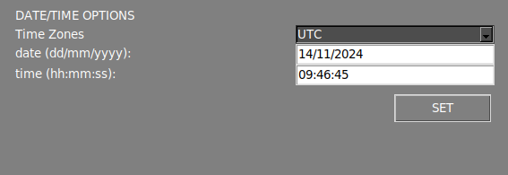

Menu Impostazioni
Il menu Impostazioni è diviso in diverse sezioni, descritte di seguito.

Opzioni Interfaccia

Mostra exif
Visualizza i metadati dell'immagine corrente nell'area di lavoro principale.
Mostra icone area di lavoro
Abilita un set di funzionalità nell'area di lavoro principale. Maggiori informazioni su queste funzionalità sono disponibili nella sezione successiva.
Segnalazione automatica
Per impostazione predefinita, il software numererà gli errori dopo l'ispezione. Disabilitando questa opzione, solo l'area interessata verrà evidenziata a colori.
Colore maschera
Questa opzione consente di cambiare il colore dell'errore marcato. Quando il colore dell'errore marcato corrisponde al colore della PCBA, è consigliabile cambiarlo con un colore a contrasto più elevato per rendere le aree marcate più visibili.
Lingua
Cambia la lingua dell'interfaccia. Le lingue attualmente disponibili sono: Inglese, Francese, Tedesco, Italiano e Spagnolo.
Opzioni Flusso di Lavoro

Processo automatico
Attiva/disattiva la funzione di processo automatico.
Usa codice a barre
Attiva/disattiva la funzione di lettura del codice a barre.
Processo automatico cartella PCB_IN
Abilitando questa opzione, tutte le immagini UUI contenute nella cartella APP/PCB_IN verranno elaborate automaticamente utilizzando il RIFERIMENTO caricato nell'applicazione. Questa funzione è disponibile solo nella versione ONLINE.
Avviso
Dalla versione 7 questa funzionalità non è più operativa.
Mostra popup errori
Disabilitando questa opzione, la finestra di reporting non verrà più visualizzata quando si segnala un errore con la freccia SU o GIÙ. Gli errori segnalati verranno generati con l'etichetta "other" (altro) nel report PDF finale.
Mostra mosaico riferimenti
Disabilitando questa opzione, il menu mosaico non verrà visualizzato dopo aver acquisito un'immagine di RIFERIMENTO.
Modalità Operatore
Abilitando questa opzione, diverse funzionalità verranno nascoste dall'interfaccia, semplificando l'uso del software. Inoltre, impedisce all'operatore di cambiare l'immagine di RIFERIMENTO o la sensibilità delle ispezioni. È possibile aggiungere una password in modo che solo l'amministratore possa disabilitare questa opzione.
Sensibilità abilitata
Consente di cambiare la sensibilità quando si è in modalità operatore.
Opzioni Report

ID Operatore
Imposta un ID per l'operatore attuale. Questo ID verrà visualizzato nel report PDF finale dopo il completamento dell'ispezione.
ID Ordine
Imposta un ID per l'ordine di produzione corrente. Questo ID verrà visualizzato nel report PDF finale dopo il completamento dell'ispezione.
ID Piattaforma
Imposta un ID per l'AOI.
TAG
Imposta il TAG (OK o NOK) del report PDF finale come suffisso o prefisso del nome del file.
TAG OK
Imposta un TAG OK personalizzato per il report PDF finale.
TAG NO OK
Imposta un TAG NO OK personalizzato per il report PDF finale.
Report automatico
Quando questa opzione è abilitata, un report PDF finale etichettato OK verrà generato automaticamente se non vengono rilevati errori dopo l'ispezione. Il report PDF finale può anche essere generato se vengono rilevati errori durante l'ispezione.
Nota
Quando si genera automaticamente un report PDF, tutti gli errori rilevati verranno contrassegnati con l'etichetta "unknown" (sconosciuto).
Mostra tutti i difetti
Visualizza tutti gli errori rilevati nel report PDF anche se l'operatore non li ha segnalati.
Logo
Imposta un logo per il report PDF.
Opzioni Data/Ora

Fuso orario
Imposta il fuso orario.
Data e ora
Imposta giorno e ora.
Nota
Per applicare le modifiche, premere il pulsante SET e riavviare il sistema.
Opzione Percorso

PCB OUT
Cambia il percorso in cui vengono generate le ispezioni.
Opzioni Condivisione

Condividi cartelle
Abilitando queste opzioni, il sistema condividerà automaticamente le cartelle PCB_OUT e REFERENCE nella rete locale. L'indirizzo di accesso verrà visualizzato una volta impostata l'opzione.
Nota
Per applicare le modifiche, premere il pulsante SET.
Nota
Per le unità OFFLINE, se è necessario cambiare l'interfaccia di rete della propria unità, fare riferimento all'articolo sulla configurazione di rete.
Sezione Informazioni

Info AOI
Le informazioni sull'AOI vengono visualizzate in questa sezione.
Backup
Questa funzione genera automaticamente un file compresso di backup della cartella PCB_OUT. Il file di backup viene memorizzato nella cartella APP/BACKUP.
Password impostazioni
Imposta una password per accedere al menu impostazioni.
Nota
Impostare la password su vuota per disabilitare il requisito della password.